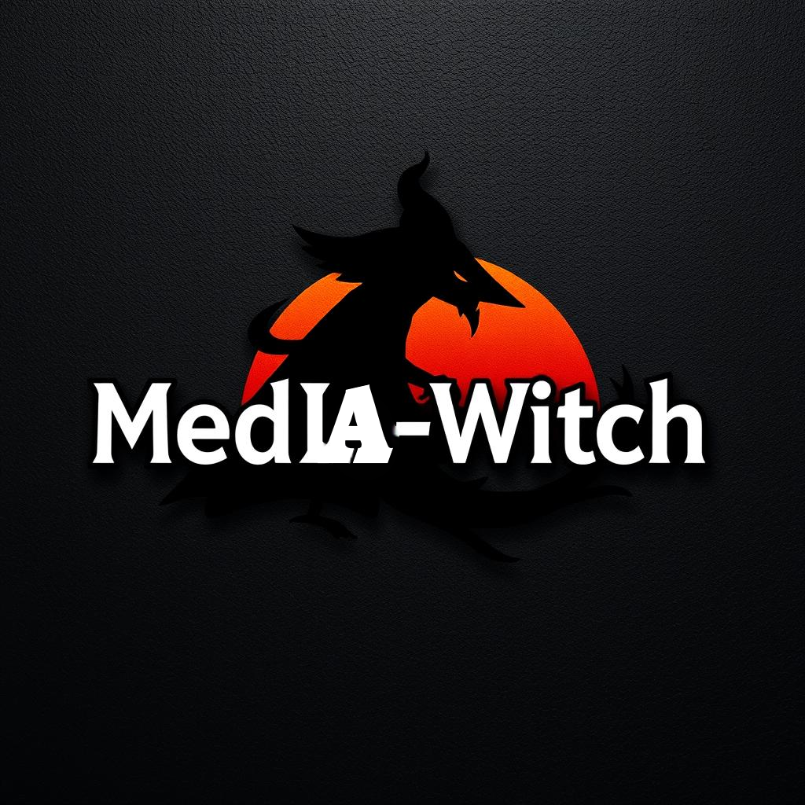

MedIA-Witch
MedIA-Witch is a powerful open-source desktop application for enhancing images and videos using advanced AI models. Based on QualityScaler, the tool integrates optimized models such as Real-ESRGAN, SRGAN, BSRGAN, and IRCNN, offering an easy-to-use interface to improve the quality and resolution of your media.

🌟 Key Features
- Advanced AI Models for Quality Enhancement: Real-ESRGAN, SRGAN, BSRGAN, IRCNN for enhancing image and video quality, reducing noise, and effectively increasing resolution.
- Batch Processing: Improve multiple images and videos at the same time, ideal for restoring entire collections.
- Customizable Settings: Allows configuring output resolution, image/video format, and selecting the most suitable AI model for the best results.
- User-Friendly Interface: Perfect for users of all levels, with an interface that simplifies media enhancement with just a few clicks.
- Open-Source: MedIA-Witch is available under the MIT License, allowing free modification and extension of its functionality.
🚀 Installation
Follow these steps to get started with MedIA-Witch:
- Run the installer and follow the on-screen instructions.
- Launch the application: Run MedIA-Witch.exe on your Windows system.
- Start enhancing your images and videos!
MedIA-Witch uses PyInstaller and InnoSetup for easy installation and executable creation.
🛠️ How to Use
- Launch the application: Run MedIA-Witch.exe as administrator for better performance.
- Select your file: Upload images, videos, or entire folders to enhance.
- Configure the settings: Choose the AI model (Real-ESRGAN, SRGAN, BSRGAN, IRCNN, etc.) and adjust output resolution and format (PNG, JPEG, MP4, etc.).
- Start the process: Click the Start button and let MedIA-Witch do its work.
- Save the enhanced files: Once the process is complete, the files will be saved in the selected location.
🔍 Quality Comparison
Original Image
Enhanced Image (IRCNN_Mx1_fp16)
📊 System Requirements
- Operating System: Windows 10 or later.
- RAM: Minimum 4GB, recommended 8GB or more.
- GPU: A NVIDIA GPU is recommended for faster processing.
- Storage: Enough space for output files depending on the size and number of processed media.
📜 Credits and License
MedIA-Witch is based on QualityScaler and integrates several open-source technologies, including:
MedIA-Witch is distributed under the MIT License. Please refer to the LICENSE file for more details.
🤝 Contributions
Contributions are welcome! Feel free to fork the repository, open issues, and submit pull requests to improve the project.
For detailed guidelines on contributing, check out the CONTRIBUTING.md file.